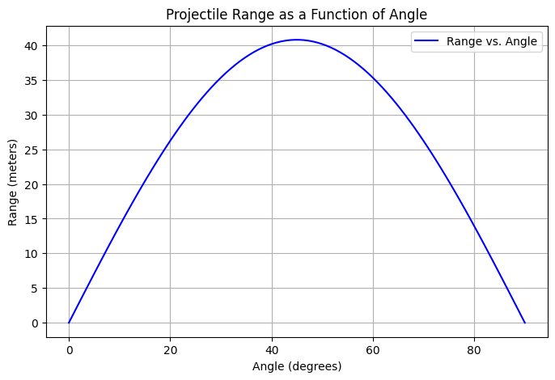

Investigating the Range as a Function of the Angle of Projection
Theoretical Foundation
We begin by considering the motion of a projectile under the influence of gravity. The motion in both the horizontal and vertical directions can be described using the following equations:
Equations of Motion
For a projectile launched with an initial velocity \( v_0 \) at an angle \( \theta \) to the horizontal, we can break the velocity into horizontal and vertical components:
-
Horizontal velocity component: $$ v_{0x} = v_0 \cos(\theta) $$
-
Vertical velocity component: $$ v_{0y} = v_0 \sin(\theta) $$
The equations of motion in the horizontal (\(x\)) and vertical (\(y\)) directions are given by:
-
Horizontal motion: $$ x(t) = v_{0x} t = v_0 \cos(\theta) t $$
-
Vertical motion: $$ y(t) = v_{0y} t - \frac{1}{2} g t^2 = v_0 \sin(\theta) t - \frac{1}{2} g t^2 $$
Where: - \( g \) is the acceleration due to gravity - \( t \) is the time of flight
Time of Flight
To find the time of flight \( T \), we set the vertical displacement \( y(t) \) equal to zero when the projectile lands:
Solving for \( T \), we get:
Range of the Projectile
The range \( R \) is the horizontal distance the projectile travels before landing. Using the time of flight \( T \), the range can be determined from the horizontal motion equation:
Substituting the expression for \( T \):
Simplifying the expression for the range:
Variations with Initial Conditions
As the angle \( \theta \) changes, the range of the projectile also changes. The sine function \( \sin(2\theta) \) shows how the range is maximized at an angle of \( 45^\circ \), where the value of \( \sin(2\theta) \) is 1.
Thus, the range is a function of the launch angle \( \theta \), initial velocity \( v_0 \), and gravity \( g \). Variations in any of these initial conditions lead to a family of solutions for the range, allowing us to analyze how changes in conditions affect projectile motion.
